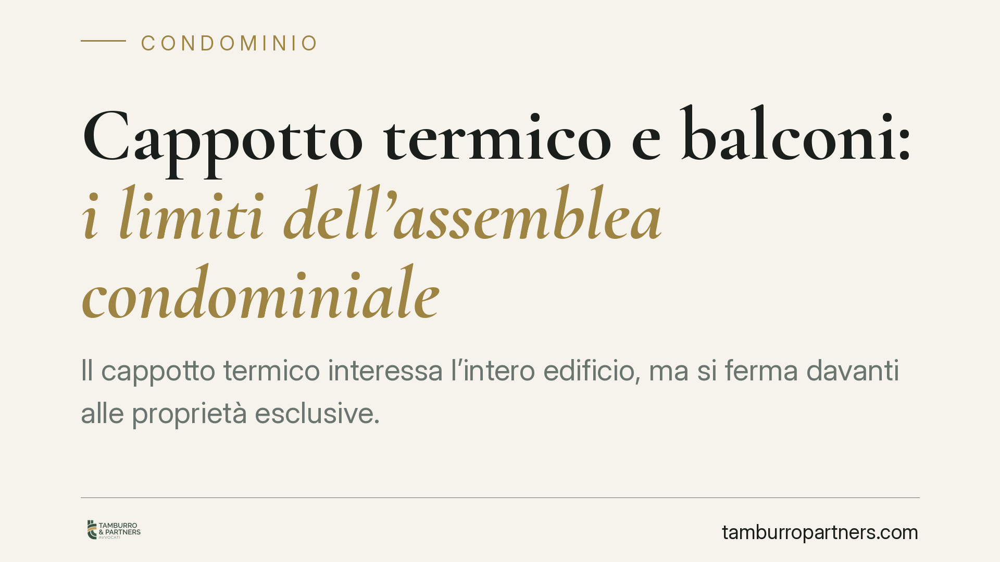

Cappotto termico e balconi: i limiti dell'assemblea condominiale
Il cappotto termico interessa l'intero edificio, ma si ferma davanti alle proprietà esclusive. L'assemblea non può imporre interventi sui balconi del singolo condomino: su questi beni serve il suo consenso. Capire la differenza tra parti comuni e private evita delibere viziate e contenziosi al momento del cantiere.

Il contesto
L'efficientamento energetico ha moltiplicato le delibere condominiali per l'installazione del cappotto termico, cioè il rivestimento isolante applicato alle facciate. L'intervento riguarda in genere parti comuni: muri perimetrali e facciate (art. 1117 c.c.). Il problema nasce quando il cappotto, per ragioni di continuità termica, coinvolge anche i balconi.
Qui occorre una distinzione tecnica che pesa sul piano giuridico. Il balcone aggettante — quello che sporge dalla facciata ed è sorretto autonomamente — è di norma di proprietà esclusiva del condomino del piano. Il balcone incassato (a loggia) o gli elementi con funzione strutturale e decorativa della facciata possono invece ricadere, in tutto o in parte, tra le parti comuni. La proprietà del bene determina chi ha il potere di decidere.
Inquadramento normativo
L'assemblea delibera sulla gestione delle parti comuni (artt. 1135 e 1120 c.c.) e ciascun condomino può usarle nei limiti dell'art. 1102 c.c. Le innovazioni finalizzate al risparmio energetico seguono i quorum agevolati previsti dall'art. 1120 c.c.
Il perimetro, però, si arresta alla proprietà esclusiva. L'assemblea non può disporre di beni che non le appartengono: su un balcone aggettante di proprietà individuale serve il consenso del titolare. La giurisprudenza di legittimità più recente conferma questa linea, qualificando come nulle — non semplicemente annullabili — le delibere che incidono su diritti dominicali dei singoli.
La distinzione tra nullità e annullabilità non è formale. La delibera annullabile (per vizi di procedura o di competenza su materie comuni) va impugnata entro 30 giorni davanti all'autorità giudiziaria, come prevede l'art. 1137 c.c.; decorso il termine, resta valida. La delibera nulla — perché invade la proprietà esclusiva — può essere fatta valere senza limiti di tempo e da chiunque vi abbia interesse.
Va chiarito un equivoco ricorrente: l'art. 1122-bis c.c. non disciplina il cappotto termico. Quella norma riguarda gli impianti per la produzione di energia da fonti rinnovabili (ad esempio i pannelli solari) e gli impianti di ricezione e comunicazione del singolo condomino su parti comuni o esclusive. Il cappotto, come innovazione sulle parti comuni, trova riferimento negli artt. 1120 e 1135 c.c., con il limite generale del rispetto delle proprietà individuali (art. 1122 c.c.).
Implicazioni pratiche
Per l'amministratore, questo significa che una delibera sul cappotto può essere legittima per la facciata e, nello stesso tempo, inefficace nella parte in cui pretende di intervenire sui balconi privati. Il rischio concreto è duplice: un cantiere che si blocca per l'opposizione del singolo proprietario e una delibera esposta a impugnazione.
Per il condomino proprietario del balcone, la tutela esiste anche oltre i 30 giorni, perché la decisione che incide sul suo diritto è nulla. Resta comunque opportuno reagire tempestivamente, prima che i lavori raggiungano la sua proprietà.
Per la maggioranza che vuole procedere, la via corretta non è forzare la delibera, ma acquisire il consenso dei proprietari interessati e disciplinare per iscritto modalità, oneri e ripristini.
Cosa fare in concreto
- Classificate ogni balcone prima della delibera: aggettante (di norma esclusivo) o incassato/strutturale (potenzialmente comune). La qualificazione decide chi ha voce in capitolo.
- Separate nel verbale le opere sulle parti comuni da quelle che toccano proprietà esclusive, così da non viziare l'intera decisione.
- Raccogliete il consenso scritto dei proprietari dei balconi coinvolti, specificando interventi, ripartizione dei costi e obblighi di ripristino.
- Verificate i termini: chi contesta un vizio procedurale agisca entro 30 giorni ex art. 1137 c.c.; ricordate che la delibera invasiva della proprietà esclusiva è nulla e impugnabile senza termine.
- Fate valutare progetto e titoli edilizi da un tecnico, per confermare che l'intervento sui balconi sia davvero necessario alla continuità termica e non eccedente.
Una pianificazione accurata della fase deliberativa riduce sensibilmente il rischio di contenzioso e di sospensione dei lavori.
Contributo informativo a cura di Tamburro & Partners - Avv. Giuseppe Tamburro. Non costituisce parere legale.
Ogni condominio ha una storia a sé.
Se gestisci un'amministrazione e vuoi un confronto su una specifica questione condominiale, scrivi allo studio. Ti rispondiamo entro un giorno lavorativo.